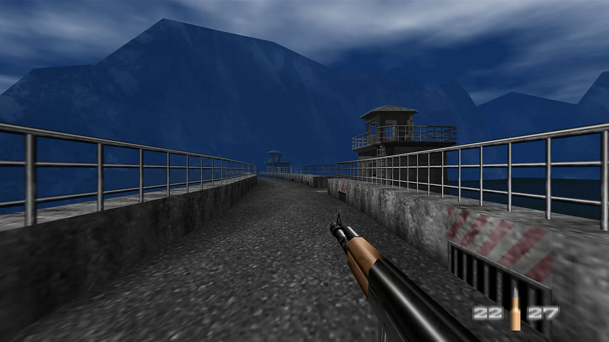
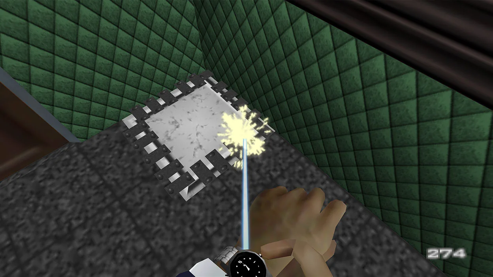

Kontrol
Bond læser rum, mennesker og risici hurtigt.
Hovedkvarter · Sag 007
Et arkiv over den figur, der siden 1960'erne har skiftet udtryk uden at miste sin genkendelige kerne.
Åbn agentprofilVælg sagsområde
Portalen samler karakteranalyse, filmhistorie, periodeskift og en analyse af 007 First Light. Filmene står centralt, mens spillet viser, hvordan Bond fortsat bliver fortolket i nye medier.
S02 · Agentprofil
En figur bygget på kontrol, handlekraft og en konstant konflikt mellem professionel pligt og personlig sårbarhed.
Bond forbliver genkendelig, fordi hver periode bevarer figuren som kompetent outsider og samtidig ændrer hans moral, humor og følelsesliv.Læs karakteranalysen
Bond læser rum, mennesker og risici hurtigt.
Stil og ro fungerer som en professionel maske.
Nyere fortolkninger lader tab få varige konsekvenser.
S03 · Analyse
Bond bevæger sig mellem klassisk helt, professionel antihelt og sårbart menneske.
Bond løser problemer gennem kunnen og handling. Han følger en mission, men bryder ofte reglerne, når hans egen vurdering vejer tungere end institutionens. Det gør ham effektiv og vanskelig at kontrollere.
Den klassiske Bond fremstår næsten urørlig. Senere fortolkninger viser tydeligere, at vold, tab og loyalitet påvirker ham. Figuren bliver dermed mindre mytisk og mere psykologisk.
Loyaliteten retter sig både mod missionen og mod enkelte mennesker. Spændingen opstår, når de to hensyn kolliderer. Bond vælger ofte selv, hvad pligten kræver, og det placerer ham mellem helt og antihelt.
Humor, maskulinitet, teknologi og relationer skifter med samtiden. Kontrol, elegance og handlekraft fungerer som figurens stabile kerne. Derfor kan publikum genkende Bond, selv når tone og moral ændrer sig.
Analysebevis: Udviklingen ses tydeligt fra Connerys kontrollerede casinoentré i Dr. No over Brosnans fysiske dam-spring i GoldenEye til Craigs sårbare torturscene i Casino Royale. Scenerne bruger henholdsvis performance, spektakel og kropslig konsekvens til at definere helten.
S04 · 007-arkiv
Udvalgte nedslag viser, hvordan figuren ændrer sig fra periode til periode.
S05 · Filmsagsmappe
S06 · Tidslinje
Seks perioder viser, hvordan helten følger sin samtid.
S07 · Periodeprofil
S08 · Spilbriefing
En selvstændig oprindelseshistorie om en ung Bond på vej ind i MI6's eliteprogram.
Åbn spilanalysenOriginalt stemningsbillede · ikke officielt spilmaterielNy fortolkning
Spillet fremstiller Bond som en dygtig, men endnu udisciplineret rekrut. Dermed flytter fokus fra den færdige ikonfigur til processen, hvor han lærer at blive 007.
S09 · Dansk blog og spilanalyse
Et kantet spil fra 1997 afslører, hvorfor moderne Bond-spil stadig bygger på missioner, valg og den perfekte spionfantasi.
Opgave 3 · Debatblog
Du behøver ikke have rørt en Nintendo 64 for at kende følelsen: én agent, én mission og et rum fyldt med vagter, alarmer og muligheder. GoldenEye 007 ser gammelt ud. Det tænker stadig overraskende moderne.
For en spiller, der er vokset op med to analogsticks, føles den oprindelige N64-styring som at styre Bond med albuerne. Sigtet er langsomt, animationerne hakker, og fjenderne reagerer med en blanding af komik og kaos. Xbox-versionens moderne kontrol og skarpere opløsning gør indgangen lettere, men spillets alder kan stadig mærkes.
Det er samtidig pointen: GoldenEye 007 prøver ikke kun at være en skydebane. Højere sværhedsgrader tilføjer nye mål, og missionerne kræver, at spilleren læser omgivelserne. Man kan skyde sig frem, men alarmen, gidslerne og de skrøbelige computere gør rå kraft til en risiko. Spillet gør Bond til en rolle, man udfører.
Tre konkrete scener

Gelænderet og den lange grå vej danner linjer mod vagttårnet. De blå bjerge fylder baggrunden og får anlægget til at virke isoleret. Grafikken er enkel, men rummet fortæller præcist, hvor du skal hen. Da missionen slutter med springet fra dæmningen, bliver spillerens bevægelse selve filmøjeblikket.
Missilet er placeret som en mørk kile midt i billedet. Ringene, rørene og det lave perspektiv trækker blikket opad, mens rødt og koldt blåt lys skaber alarm. De få polygoner begrænser detaljen, men den stærke komposition gør truslen fysisk: spilleren står bogstaveligt talt under katastrofen.

Uret, hånden og den blå laser fylder forgrunden. Den tætte beskæring fjerner næsten hele rummet, så opmærksomheden samles om et enkelt problem. Scenen er enkel, men afgørende: Bond-identiteten ligger ikke kun i våben og jakkesæt. Den ligger i, at et redskab ændrer, hvad spilleren kan gøre.
Mesterværket
Missionernes mål, alarmer og valg gør banen til mere end en korridor. Spillet forstår, at Bond-fantasien handler om at observere, improvisere og gennemføre en plan. Det er grunden til, at strukturen stadig kan mærkes i nyere actionspil.
Museet
Fjendernes kunstige intelligens, uklare mål og stive animationer kan skabe frustration i stedet for spænding. Det berømte lokale multiplayer er stadig socialt stærkt, men skærmkiggeri og ujævn balance føles som regler fra en anden tid.
GoldenEye 007 er ikke tidløst, fordi alt stadig fungerer. Det er tidløst, fordi dets bedste idéer stadig er synlige under den kantede overflade. Nye spillere skal acceptere friktion, men belønningen er at opleve et spil, hvor Bond ikke bare vises på skærmen — han bliver skabt gennem spillerens beslutninger.
Debat: Hvor meget gammel styring vil du acceptere for at opleve et vigtigt stykke spilhistorie?
Kort video
Traileren viser missioner, split-screen og den moderniserede Xbox-udgave. Brug den til at sammenholde den flydende genudgivelse med de bevidst enkle billeder ovenfor.
S10 · Sammenligninger
Vælg to perioder eller medier og sammenlign deres version af Bond.
Forslag
S11 · Sammenligning
Vigtigste forskel
S12 · Efterretningsrapport
En samlet arbejdskonklusion på tværs af karakter, filmhistorie og spil.
James Bond fungerer som et kulturelt ikon, fordi figuren kombinerer en stabil kerne med en usædvanlig evne til at skifte form.
Missionen, handlekraften, elegancen og forbindelsen til britisk efterretning gør figuren genkendelig på tværs af skuespillere og medier.
Synet på køn, vold, autoritet og sårbarhed følger samtiden. Hver periode ændrer derfor, hvad publikum opfatter som en troværdig helt.
GoldenEye 007 viser, at Bond også kan defineres gennem spillerens handlinger: at observere, vælge en tilgang og leve med konsekvensen. 007 First Light viderefører idéen ved at gøre vejen mod 00-status til selve fortællingen.
Konklusion: Portalens film- og spilanalyser peger på det samme mønster. Mediet, samtiden og målgruppen ændrer udtrykket, mens missionen, kompetencen og den kontrollerede performance bevarer figurens identitet.
S13 · Kildearkiv
Primære kilder, officielle oplysninger, projektmateriale og konkrete analysebeviser.
Filmseriens officielle portal og historiske arkiv.
007.com Officiel007 First Light launches globallyUdgivelse, historie, platforme og medvirkende.
IO Interactive, 27. maj 2026 OfficielGameplay RevealSpillets genre, mekanikker og oprindelseshistorie.
IO Interactive OfficielGoldenEye 007Spilfakta, funktioner og de tre screenshots analyseret i debatbloggen.
Xbox / Rare OfficielBond is BackGenudgivelse, missioner, moderne styring og platforme.
Xbox Wire, 26. januar 2023Tre konkrete scener analyseret med perspektiv, rum, farver, komposition og spillerhandling.
Simon og Lucas · 7. oktober 2026Undervisningsslides om målgruppe, wireframe, Normans principper og designmanual.
Kommunikation & IT AFærdig debatblog til unge, der kender Bond-spil af navn, men ikke har spillet klassikeren.
DOCX · Simon og LucasVurdér afsender, formål, aktualitet og troværdighed. Skeln mellem officielle oplysninger, analyse og markedsføring.